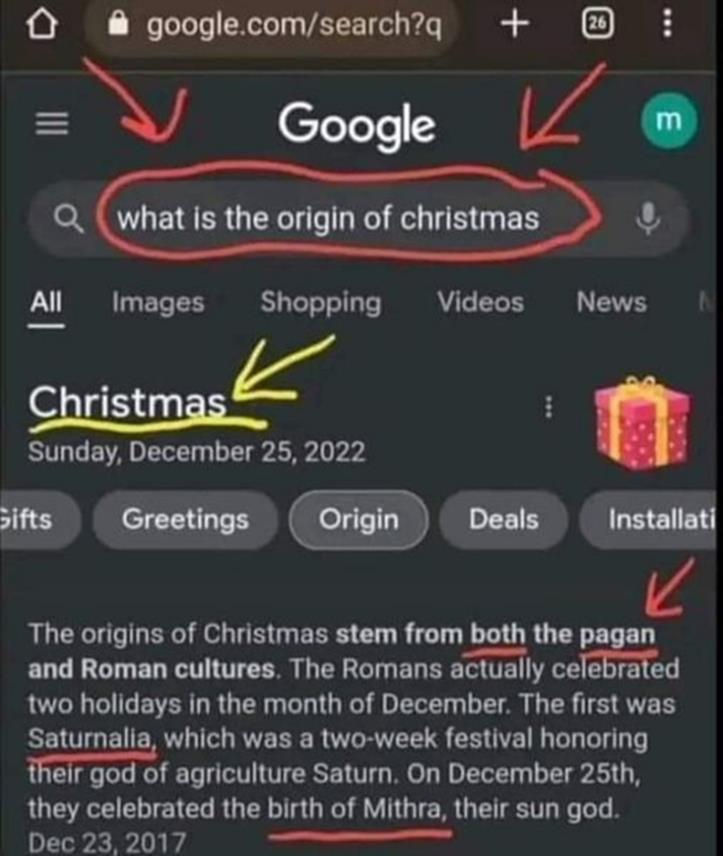
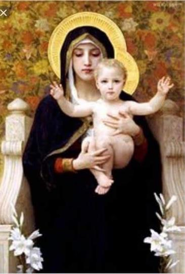
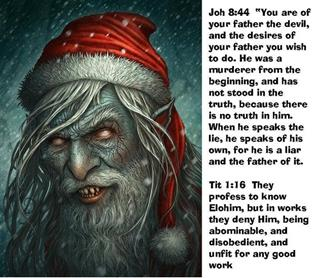
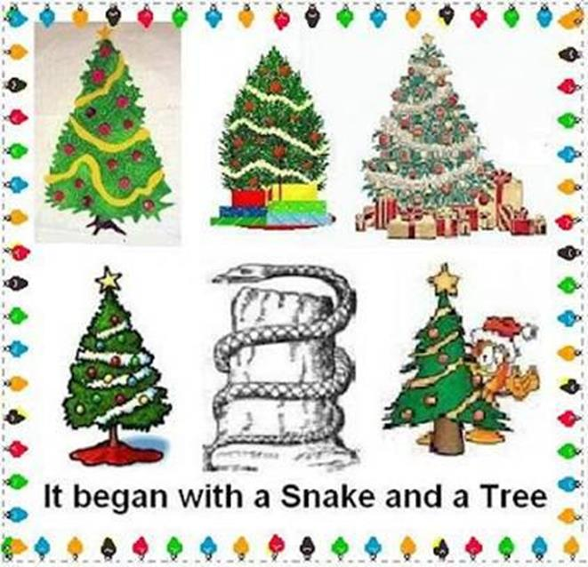
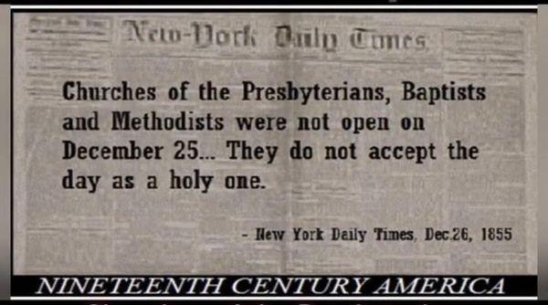
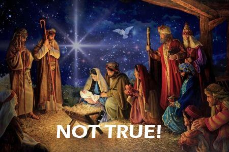
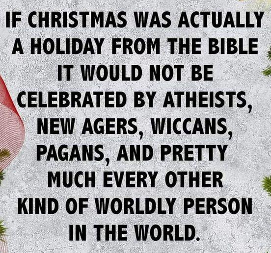
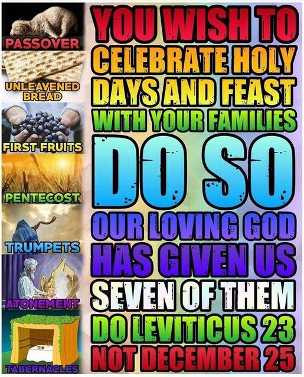

Google was honest about the roots of Christmas. Ignorance is no longer an excuse for doing something Yah hates. Before technology, we had to research libraries for info, requiring books, newspapers, magazines, and various other sources. Now we can research without even leaving home. Technology has done most of the homework, with videos, articles, blogs, books, and pics widely available, with many sources to back up the research. People make FB posts with all the research done, with sources cited for us to check on our own and get us started on doing our own research. The sad thing is people just don't care. Many say they know the roots and did the research but make excuses to celebrate anyhow. Others don't want to learn the origins and say, "That's not what it means to me." Another group claims "It's about Jesus now and that is what matters." They purposely rebel and make excuses for rebellion. It's sad and frustrating. Scripture predicted that hearts would grow cold, and it clearly shows when Believers who follow Yahushua, point out the truth.

WHAT do SCRIPTURES really TEACH about "Christmas"?
Any Believer who desires to walk in Spirit and Truth will know that we have to test everything with Scripture, and if something doesn’t align to Scripture, we should distance ourselves from it, and have nothing to do with it!
This study aims to witness what the Scriptures teach regarding Christmas.
Where did Christmas originate? From Scripture or paganism?
What is the real origin of Santa Claus — mistletoe — Christmas trees — holly wreaths — and the custom of exchanging gifts? Many are concerned about putting “Messiah back into Christmas.” Was He ever in it?
Christmas is [thought] by most to be a wonderful time, focusing the participants on giving, family togetherness, beautiful music, and decorations, feasting on special foods, and singing Christmas carols throughout the neighbourhood. All of this is [supposedly] centred on the worship of Messiah.
Why do people think that Christmas is a Scriptural observance? Most never reflect on why they believe what they believe or do what they do. We live in a world filled with deception, corruption, and various customs, but few ever seek to understand their origin. We generally accept them without question. Most people do what everyone else does — they go with the flow because it is easy and without complications.
How was “Christmas” passed down to “Christianity”?
In the pagan Roman society during the time Yahushua was impaled by Rome on a stake, they instituted the “Saturnalia” in honour of the god Saturn. It was a lawless celebration held on December 25th, the birthday of Nimrod and Tammuz. Each year, an innocent person would be chosen by the communities as a human sacrifice to the gods. This person would be forced into engaging in all types of physical pleasures (food, Sex, etc) throughout the week leading up to Saturnalia then murdered on December 25th to obtain the gods' blessing for the coming year's crops.
In addition to human sacrifice, there was widespread intoxication, and the people would go house to house singing (the origin of caroling). The people would mimic human sacrifice by eating human-shaped biscuits (we call them gingerbread men). The Encyclopaedia Britannica volume 24 page. 231 tells us the people would give each other gifts. Primarily to children in the form of “dolls” which represented sacrificed human beings to the infernal gods.
Christianity incorporated Saturnalia into the religion of Constantine (Christianity) calling it Christmas in the 4th Century AD. No such festival exists in the Scriptures. It is directly from Babylon.
- -The Plain Truth About Christmas
by David J. Stewart | December 24th, 2005
“The real origin of Christmas goes back to ancient Babylon. It is bound up in the organized apostasy with which Satan has gripped a deceived world these many centuries! In Egypt, it was always believed that the son of Iris (Egyptian name for “Queen of Heaven”) was born December 25th. Semiramis also bore the title “Queen of Heaven” – and she was Nimrod’s mother.
Paganism celebrated this famous birthday over most of the known world for centuries before the birth of the Jewish Messiah.”
- -The Plain Truth About Christmas
by David J. Stewart | December 24th, 2005
“Christmas as a pagan holiday traces back thousands of years before to a man named Nimrod, founder of ancient pagan Babylon.”
- -Christmas Unwrapped
From the History Channel by Alan Mansager
“Babylon’s false worship is found today in every nation and in some aspect in nearly all religions, including present-day Christianity.”
- -Christmas Unwrapped
From the History Channel by Alan Mansager
“Egyptian and Babylonian antiquities identify Nimrod’s mother as Semiramis, and his birthday was celebrated on 25th December.”
- -The True Meaning of Christmas
by Mike Gascoigne; 1996
“Thus began the worship of Semiramis and the child-god, and the whole paraphernalia of the Babylonian religious system.”
- -The True Meaning of Christmas
by Mike Gascoigne; 1996
“The Roman Pagans used to celebrate the birthday of their child-god on 25th December, and the Roman Catholic Church sought to win over as many people as possible to nominal Catholicism by proclaiming the same day to be the birthday of Messiah. So the Pagans had no difficulty worshipping the Catholic Madonna and child. They were seen as yet another manifestation of the Babylonian Queen of Heaven (Semiramis)and her son (Nimrod).
The Pagans made no compromises, they didn’t need to, they just continued their Pagan worship within the church.”
- -The True Meaning of Christmas
by Mike Gascoigne; 1996
“While it’s easy to knock the Catholic Church because of their Miryamolatry, the Protestants cannot be left off the hook. The Protestant Reformation dispensed with only a part of the Babylonian system of worship. The celebration of Christmas, inherited from the Roman Catholic Church, via Pagan Rome, via Egypt, via Babylon, is still practiced as the most important event in the Protestant Christian calendar, so from that point of view the Protestants are as much into Paganism as the Catholics.”

We read in Werner Keller's book The Bible as History the following admission:
"December 25 is referred to in documents as Christmas Day in A.D. 324 for the first time. Under the Roman emperor Justinian [A.D. 527-565] it was recognized as an official holiday. An old Roman festival played a major part in the choice of this particular day. December 25 in ancient Rome was the 'Dies Natali Invictus,' 'the birthday of the unconquered,' the day of the winter solstice and at the same time, in Rome, the last day of the Saturnalia, which had long since degenerated into a week of unbridled carnival..." (p. 331).
Saturnalia (an agricultural deity) was an ancient Roman festival in honour of the deity Saturn originally held on December 17, and later expanded with festivities through December 23. The holiday was celebrated with a sacrifice at the Temple of Saturn in the Roman Forum and a public banquet, followed by private gift-giving, continual partying, and a carnival atmosphere that overturned Roman social norms: gambling was permitted, and masters provided table service for their slaves.
Doesn't it seem rather strange that the "Christian church" should choose a day to celebrate the Messiah's birth which was identified as the day of the birth of the unconquered sun, the day of the winter solstice, the "shortest day of the year," when the sunlit part of the days start becoming longer again? What does this have to do with the Messiah anyway?
In the book History of Rome, by Michael Grant, we read this startling revelation:
"Yet there was also another pagan belief during this same epoch that much more nearly competed with “Christ” for the control of the Western world. This was the cult of the Sun, which was revered by millions of the inhabitants of the Roman Empire, and its religion for a time even became the state worship . . .
"In Rome, the divinity of the Sun came very early on; and then, centuries afterwards, in the superb dome of Hadrian's Pantheon, the central opening, surrounded by star-like rosettes, represented the solar orb . . . Before long, the emperor Aurelian established a massive temple of the Unconquerable Sun as the central and focal point of the entire religious system of the state. The birthday of the god was to be on DECEMBER 25 and this TRANSFORMED INTO CHRISTMAS DAY as ONE of the HERITAGES that “CHRISTIANITY” OWED TO HIS CULT" (p. 391- 392, emphasis mine).
The word "Christmas" means "Mass of Christ," or, as it came to be shortened, "Christ-Mass." It came to non-believers and Protestants from the Roman Catholic Church. And where did they get it? NOT from the Renewed Covenant (New Testament) — NOT from the Scriptures — NOT from the original Disciples who were personally instructed by the Messiah — but it gravitated in the fourth century into the Roman Church from paganism. Since the celebration of Christmas has come to the world from the Roman Catholic Church and has no authority but that of the Roman Catholic Church, let us examine the Catholic Encyclopaedia, 1911 edition, published by that church. Under the heading "Christmas," you will find:
"Christmas was not among the earliest festivals of the Church . . . the first evidence of the feast is from Egypt." "PAGAN customs centering around the January calendar gravitated to Christmas."
And in the same encyclopaedia, under the heading "Natal Day," we find that the early Catholic father, Origen, acknowledged this truth:
". . . In the Scriptures, no one is recorded to have kept a feast or held a great banquet on his birthday. It is only sinners [like Pharaoh and Herod] who make great rejoicings over the day in which they were born into this world"
Encyclopaedia Britannica, 1946 edition, has this:
"Christmas (i.e., the Mass of Christ) . . . Christmas was not among the earliest festivals of the church. . . ."
It was not instituted by “Christ” or the apostles, or by Bible authority. It was picked up afterward from paganism. Every sincere birthday party honours the one born that day, rather than all the mere guests. A gift exchange dictated by a calendar is not a message of love but a ritual of obligation. A gift exchange at the winter solstice was invented by pagans to celebrate the sun god.
Charles Spurgeon, the most popular Baptist minister, preached against it as late as 1871. All the unique customs of Christmas may be traced individually to pagan religious rites.
Hindus, Jews, Mormons, Pagans, and other cults celebrate it while despising Yahushua. Using the Scriptures' silence to justify anything not expressly forbidden will lead to Coke and chips for Yahushua's supper and Ouija boards for difficult decisions. It creates the most foolish, hectic, stressful, guilt-ridden, and unproductive time of year.
But if we got Christmas from the Roman Catholics, and they got it from paganism, where did the pagans get it? Where, when, and what was its real origin?
It is a chief custom of the corrupt system denounced all through Scripture prophecies and teachings under the name of Babylon. And it started and originated in the original Babylon of ancient Nimrod! Yes, it stems from roots whose beginning was shortly this side of the Flood!
Nimrod, grandson of Ham, son of Noah, was the real founder of the [Babylonish] system that has gripped the world ever since — the system of organized competition — of man-ruled governments and empires, based upon the competitive and profit-making economic system. Nimrod built the tower of Babel, the original Babylon, ancient Nineveh and many other cities. He organized the world's first kingdom. The name Nimrod, in Hebrew, is derived from "Marad," meaning "he rebelled."
The real origin of Christmas goes back to ancient Babylon. It is bound up in the organized apostasy with which Satan has gripped a deceived world these many centuries!
In Egypt, it was always believed that the son of Isis (Egyptian name for "Queen of Heaven") was born on December 25th. Paganism celebrated this famous birthday over most of the known world for centuries before the birth of Yahushua.
Santa Claus
Santa Claus is a pagan mockery of Almighty Father יהוה, with white hair, a grandfatherly image, eternal, lives in the North, unlimited resources, omniscient of children's behaviour, omnipresent for a night, hears confessions, comes as a thief, blesses children, and distributes judgment for works. The name "Santa Claus" is a corruption of the name "St. Nicholas," a Roman Catholic bishop who lived in the 5th century.
Look in the Encyclopaedia Britannica, volume 19, pages 648-649, where you'll read:
"St. Nicholas, bishop of Myra, a saint honored by the Greeks and Latins on the sixth of December . . .
A legend of his surreptitious bestowal of dowries on the three daughters of an impoverished citizen . . . is said to have originated the custom of giving presents in secret on the eve of St. Nicholas [Dec 6], subsequently transferred to Christmas day. Hence the association of Christmas with Santa Claus . . .
Throughout the year, parents punish their children for telling falsehoods. Then, at Christmas time, they tell their little children this "Santa Claus" lie! Is it any wonder many of them, when they grow up and learn the truth, begin to believe Yahushua is a myth, too?
One little fellow, sadly disillusioned about "Santa Claus," said to a playmate, "Yes, and I'm going to investigate this “YAHUSHUA” business, too!" Is it acceptable to teach children myths and falsehoods? יהוה our Father says "You shall not bear false witness!" It may seem right, and be justified by human reason, but יהוה says "There is a way that seems right to a man, but the end thereof are the ways of death!"
"Old Nick" also is a term for the devil! Is there a connection?
Satan appears as an "angel of light," to deceive! (Qorintiyim Bet/IICor 11:14; Chazon/Rev 12:9)

Christmas Tree
The modern Christmas tree originated in Germany. But the Germans got it from the Romans, who got it from the Babylonians and the Egyptians.
The following demonstrates what the Babylonians believed about the origin of the Christmas tree:
“An old Babylonish fable told of an evergreen tree which sprang out of a dead tree stump. The old stump symbolized the dead Nimrod, the new evergreen tree symbolized that Nimrod had come to life again in Tammuz! Among the Druids the oak was sacred, among the Egyptians it was the palm, and in Rome it was the fir, which was decorated with red berries during the Saturnalia!” (Walsh Curiosities of Popular Customs, p. 242).
Yirmiyahu/Jeremiah 10:2-4
“Learn not the way of the heathen, and be not dismayed at the signs of heaven; (astrology, NOT astronomy, was idolized) for the heathen are dismayed at them…For the customs of the people are vain: for one cuts a tree out of the forest, the work of the hands of the workman, with the axe. They deck it with silver and with gold; they fasten it with nails and with hammers that it move not.”
The Hebrew word for “groves” in this case is:
Strong’s H842 – ‘asherah אֲשֵׁרָה’.
Asherah: groves (for idol worship); a Babylonian (Astarte/Ishtar) - Canaanite goddess (of fortune and happiness), the supposed consort of Baal known as Ishtar, her images; the goddess, goddesses; her images; sacred trees or poles set up near an altar.
The origin of the X-mas Tree (X or “the cross” is the symbol of Tammuz) is the Tammuz/Nimrod Tree and has absolutely nothing to do with The Messiah or The Truth found in Scripture. The X-mas Tree was a central figure in the Babylonian Religion with a snake wrapped around a tree trunk. We now, of course, don’t have snakes around our tree we have garland! But let us not be so naive to think יהוה approves of such ignorance in worship founded in Babylonian paganism…
Christmas trees are Asherah poles or sacred trees for honouring “Ba’al” and the ornaments represent Nimrod’s testicles! Garland represents the serpent, Satan! Babylonian history records that Nimrod was cut into pieces and his body parts were sent to different provinces of Babylon to warn the people not to sacrifice babies to Moloch. His only body part which was never found was his penis. Semiramis, his mother/wife then decided to memorialize his penis by erecting a giant image of Nimrod’s penis which today is called the obelisk. They adorn many Christian Churches today as steeples.
We are COMMANDED by יהוה to destroy these very structures: Shemoth/Exodus 23
24 “Do not bow down to their mighty ones, nor serve them, nor do according to their works, but without fail overthrow them and without fail break down their pillars.
Shemoth/Exodus 34
13 “But break down their slaughter-places, and smash their pillars, and cut down their Ashěrim –
Devarim/Deuteronomy 7
5 “But this is what you do to them: Break down their slaughter-places, and smash their pillars, and cut down their Ashěrim, and burn their carved images with fire.
Devarim/Deuteronomy 12
3 “And you shall break down their slaughter-places, and smash their pillars, and burn their Ashěrim with fire. And you shall cut down the carved images of their mighty ones and shall destroy their name [The names of the gentile deities (mighty ones)] out of that place.
Yirmiyahu/Jeremiah 43
13 “And he shall break the stone pillars of the House of the Sun which are in the land of Mitsrayim, and he shall burn the houses of the mighty ones of the Mitsrites with fire.” ’ ”
Hoshea 10
2 Their heart has been slippery, now they are guilty. He breaks down their slaughter-places, He destroys their pillars.
Yet, we have not “torn down every high place” that elevates itself above the knowledge of יהוה… we openly worship them as part of the Christian Religion.
The Christmas Tree is also the symbol of Satan in the Garden of Eden, the garland wrapped around the “Tree of Knowledge of Good and Evil” like a snake around the tree with the ornamental balls representing fruit:

The Source of Holly Wreaths, Yule Logs and Mistletoe
The Encyclopaedia Americana states:
“The holly, the mistletoe, the Yule log . . . are relics of “pre-Christian” time.”
In other words, paganism! The Yule log was commonly used in a rite of Teutonic nature worship.
Frederick Haskin further states:
“The use of Christmas wreaths is believed by authorities to be traceable to the pagan customs of decorating buildings and places of worship at the feast which took place at the same time as Christmas.”
The Encyclopaedia Britannica, under “Santa tales,” states:
“The European mistletoe is thought to have had special ritual significance in Druidical ceremonies and lives in folklore today, its special status as the Christmas mistletoe having come from Anglo-Saxon times.”
Mistletoe is a parasite that lives on oak trees. (Recall that the Druids worshipped in oak tree groves.) The ancient Celtics (associated with the Druids) used to give mistletoe as an herbal remedy to barren animals to make them fertile. It is still referred to as “all healer” in Celtic. Like mistletoe, holly berries were also thought to be sacred to the sun god. The original “sun log” came to be called the yule log. “Yule” simply means “wheel,” which has long been a pagan representation of the sun. No wonder people today commonly speak of the “sacred yule-tide season.”
How did This Pagan Custom get into [the Church]?
The New Schaff-Herzog Encyclopaedia of Religious Knowledge Explains clearly, in its article on "Christmas":
"How much the date of the festival depended upon the pagan Brumalia (Dec 25) following the Saturnalia (Dec 17-24), and celebrating the shortest day in the year and the 'new sun'. The pagan Saturnalia and Brumalia were too deeply entrenched in popular custom to be set aside by “Christian” influence . . . The pagan festival with its riot and merrymaking was so popular that Christians were glad of an excuse to continue its celebration with little change in spirit and in manner. Christian preachers of the West and the Near East protested against the unseemly frivolity with which YAHUSHUA's (Messiah’s) birthday was celebrated, while Christians of Mesopotamia accused their Western brethren of idolatry and sun worship for adopting as Christian this pagan festival."
Remember, the Roman world had been pagan. Before the fourth century, Christians were few in number, though increasing, and were persecuted by the government and by pagans. But, with the advent of Constantine as emperor, who made his profession of Christianity in the fourth century, placing Christianity on an equal footing with paganism, people of the Roman world began to accept this now-popular Christianity by the hundreds of thousands.
These people had grown up in pagan customs, the chief of which was this idolatrous festival of December 25th. It was a festival of merrymaking, with its special spirit. They enjoyed it! They didn't want to give it up!
Now this same article in the New Schaff-Herzog Encyclopaedia of Religious Knowledge explains how the recognition by Constantine of Sunday, which had been the day of pagan sun worship, and how the influence of the pagan Manichaeism, which identified the SON of יהוה with the physical Sun, gave these pagans of the fourth century, now turning over wholesale to "Christianity," their excuse for calling their pagan-festival date of December 25th (birthday of the Sun-God) the birthday of the SON of יהוה.
Yahushua, the Messiah was NOT born on December 25th
Yahushua was not even born in the winter season! When He was born "there were in the same country shepherds abiding in the fields, keeping watch over their flock by night," (Luqas 2:8).
This could never have occurred in Judaea in the month of December. The shepherds always brought their flocks from the mountainsides and fields and corralled them not later than October 15, to protect them from the cold, rainy season that followed that date. Notice that Scripture itself proves in Shir HaShirim/Song of Solomon 2:11 and Ezra 10:9, that winter was a rainy season not permitting shepherds to abide in open fields at night.
Shir HaShirim/Song of Solomon 2
11 “For look, the winter is past, the rain is over, gone.”
Ezra 10
9 Then all the men of Yehuḏah and Binyamin gathered at Yerushalayim within three days. It was the ninth new moon, on the twentieth of the new moon. And all the people sat in the open space of the House of Elohim, trembling because of the matter and because of showers of rain.
The Adam Clarke Commentary (Vol. 5, page 370, New York Ed.)
"It was ancient custom among Hebrews of those days to send out their sheep to the fields and deserts about the Passover (early spring), and bring them home at commencement of the first rain,"
Any encyclopaedia, or any other authority, will tell you that Yahushua was not born on December 25. The Catholic Encyclopaedia frankly states this fact.
For an in-depth study of when the Messiah was born according to the Mazzaroth click on this link:
https://img1.wsimg.com/blobby/go/05f7e15f-ad2f-4dec-9951-bf81930749a9/downloads/When%20was%20Yahushua%20Born%20acco rding%20to%20the%20Mazzar.pdf?ver=1701618261786
Almighty יהוה is a jealous Almighty and will judge any association with other mighty ones/gods.
Shemoth/Exodus 34
12 “Guard yourself, lest you make a covenant with the inhabitants of the land where you are going, lest it be a snare in your midst.
13 “But break down their slaughter-places, and smash their pillars, and cut down their Ashěrim –
14 for you do not bow yourselves to another mighty one, for יהוה, whose Name is jealous, is a jealous Ěl –
15 lest you make a covenant with the inhabitants of the land, and they whore after their mighty ones, and slaughter to their mighty ones, and one of them invites you and you eat of his slaughterings,
16 and you take of his daughters for your sons, and his daughters whore after their mighty ones, and make your sons whore after their mighty ones.
Christianity gives gifts unexpectedly, with no obligation to give anything in return (Luke 14:12-14).
יהוה condemns:
*Using pagan religious practices in His worship (Devarim/Deut 12:29-31).
*Adding to or taking away from His commandments (Devarim/Deut 12:32).
*Doing anything under green trees in His worship (Deut 12:1-4).
*The heathen use of decorated trees at a solstice (Yirmeyahu/Jer 10:1-4).
*Turning to the left or right from His commandments (Devarim/Deut 5:32-33).
* Fellowship with men having only a form of godliness (Timotiyos Bet/IITim 3:5).
*Anything different from His Word as dark ignorance (Yeshayahu/Isa 8:20).
*Anything popular with the world and esteemed by it (Luqas 16:15).
*Traditions in His worship as evil and vain hypocrisy (Marqos 7:5-13).
* The superstitious idolatry and blasphemy of the Mass (Qorontiyim Aleph/ICor 11:26).
יהוה commands us:
* To separate from and not touch pagan religion (Qorontiyim Bet/IICor 6:14-18).
*To come out of spiritual Babylon and her sins (Chazon/Rev 18:4).
*Messiah instructed His Disciples to teach us to observe only His commands (Matt 28:20).
יהוה requires reverence and godly fear in worship to avoid His fire (Ib’rim/Heb 12:28-29).
יהוה seeks true worshippers to worship Him in truth, not superstition (Yochanan/Jhn 4:23-24).
יהוה hates the polluting of His esteemed Name with pagan idolatry (Yehezkel/Eze 20:39).
יהוה considers the birth of His Son worthy of honour rather than folly (Ib’rim/Heb 1:6).
Christmas breaks:
*The first commandment by having other gods - the sun god (Shemoth/Ex 20:3).
*The second commandment by having images - a Christmas tree (Shemoth/Ex 20:4-6).
*The third commandment by taking יהוה's Name in vain - "Christmas" (Shemoth/Ex 20:7).
*The fifth commandment by promoting children's greed over parents (Shemoth/Ex 20:12).
*The tenth commandment by promoting covetousness to children (Shemoth/Ex 20:17).
Mattithyahu/Matthew 5
17 "Don't assume that I (Messiah) came to destroy the Torah/Law or the Prophets. I did not come to destroy but to complete. (what animal blood sacrifices couldn’t do).
Romiyim/Romans 3
31 Do we then cancel the law (correctly referred to as Torah, meaning Instructions) through faith? Absolutely NOT! On the contrary, we uphold the Torah/Law.
Romiyim/Romans 7
7 What should we say then? Is the Torah/Law a sin? Absolutely not! On the contrary, I would not have known sin if it were not for the Torah/Law. For Example, I would not have known what it is to covet if the law had not said, you shall not covet.
WHO will you serve?
Satan and his perverted customs through "Babylon", RCS and man -
or יהוה the Father and the inspired Word of TRUTH. Your choices determine who you revere, who you serve, who you admire and worship.

The Truth About the Christmas Nativity scene and the wise men
Mattithyahu/Matthew 2 1 And יהושע having been born in Běyth Leḥem of Yehuḏah in the days of Herodes the sovereign, see, Magi from the east came to Yerushalayim, 2 saying, “Where is He who has been born Sovereign of the Yehuḏim? For we saw His star in the East and have come to do reverence to Him.” 3 And Herodes the sovereign, having heard, was troubled, and all Yerushalayim with him. Why did this news bother Herod? The news of the birth of a new king of the Jews threatened his position. Herod was certainly familiar with the traditions and prophecies related to the Messiah. "And he gathered all the chief priests and scribes of the people and asked them where the king would be born. Then they told him: "In Bethlehem of Judah" (verses 4-5). King Herod carefully concealed his murderous intentions. "Then Herod, when he had secretly called the wise men, determined from them what time the star appeared. And he sent them to Bethlehem and said, 'Go and search carefully for the YOUNG CHILD, and when you have found Him, bring back word to me, that I may come and worship Him also'" (verses 7-8). Please note that Herod did not call Yahushua a baby, but "a young child. " He realized how long the saint's journey would take—perhaps from as far away as Parthia or the surrounding areas of Babylon, where the Yisra’elites and Jews had been exiled centuries earlier. From the moment the star appeared, Herod knew he was not looking for an infant, but a boy who was now much older. And to eliminate any threat to his position, "Herod killed all the boys who were in Bethlehem and in all its districts, from TWO years old and under, according to the time determined by the wise men" (verse 16). Herod, who had destroyed all the forces to protect his throne, ordered that those two years and younger would be slaughtered.
It wasn't the common nativity scene!! The wise men were miraculously guided to the child (verses 9-10). "And when they had come into the house, they saw the YOUNG CHILD with Miryam His mother" (verse 11). The typical nativity scene completely falls apart at this point. There is no mention of a manger here. Instead, it is said that Yahushua was in the house, he was no longer a baby, he was a little child. Apparently, the wise men visited Yahushua long after the shepherds arrived and departed—perhaps two years or more. A typical manger scene involves three wise men. However, the Scriptures do not say how many wise men there were. It is noteworthy, however, that they made three gifts to him: gold, frankincense, and myrrh. Why give these three gifts? Their symbolism is amazing when we understand them:
GOLD was a gift for royalty—in this case the chosen King of the Jews and ultimately the "King of Kings and Master of Masters" who will rule over the entire earth (Chazon/Rev 19:16). FRANKINCENSE was an incense intimately connected with the priesthood and temple sacrifices, foreshadowing the fact that Yahushua Messiah would serve as our High Priest and give Himself as the perfect sacrifice to pay the penalty for the sins of all mankind (Ib’rim/Heb 4:14-15; 9:11-14; Kepha Aleph/1 Peter:1:18-19). MYRRH had a much more sobering symbolism. When a person died, this perfuming agent was wrapped with the body to help cover up the stench of death. Yahushua's own body would be wrapped in linen with myrrh and aloes (Yochanan/John 19:39-40). Why we should celebrate יהוה's Set-Apart Days instead: Mattithyahu/Matthew and Luqas/Luke reveal the true story of the birth of Yahushua and the general time it actually took place. Yochanan the Baptist was born in the spring. According to the Mazzaroth, his cousin Yahushua was born six months later - on September 11. The shepherds came immediately; The wise men - their number is unknown - came much later.
Tragically, the true story should have become so badly garbled by human traditions. It's also tragic that people ignore Scripture's clear instructions and invent their own. Yahushua Himself roundly condemned religious leaders of His day who were "making the word of יהוה of no effect through your tradition" (Marqos:7:13). A strong and weighty biblical principle is found in Devarim/Deuteronomy 12. It tells us why we should observe the annual Set-Apart Days and festivals יהוה has revealed in His Word—not traditional holidays borrowed from paganism:
Devarim/Deuteronomy 12:31-32 "You shall not worship יהוה your Elohim in that way; for every abomination to יהוה Elohim which He hates have they done to their gods . . . whatever I command you, be careful to observe it; you shall not add to it, nor take away from it” These are the same festivals celebrated by Yahushua and Brit Chadashah/New Testament believers.
Have you ever wondered that although two gospel writers describe the circumstances of the Messiah's birth, neither mentions a date? Are you surprised that Christmas is never mentioned in Scripture? And that none of the writers of the Scriptures say anything about commemorating that birth. However, we find clear commands to remember the sacrifice and death of Yahushua the Messiah on our behalf (1 Cor. 11:23-26)

Yeshayahu/Isaiah 1
12 “When you come to appear before Me, who has required this from your hand, to trample My courtyards?
13 “Stop bringing futile offerings, incense, it is an abomination to Me. New Moons, Sabbaths, the calling of meetings – I am unable to bear unrighteousness and assembly.
14 “My being hates your New Moons (SUNday worship) and your appointed times (Christmas, New Year, Easter, Halloween, Father's/Mother's day, Valentines day...), they are a trouble to Me, I am weary of bearing them.
15 “And when you spread out your hands, I hide My eyes from you; EVEN THOUGH YOU MAKE MANY PRAYERS, I DO NOT HEAR. Your hands have become filled with blood."
Yirmeyahu/Jeremiah 10
1 Hear the word which יהוה speaks to you, O house of Yisra’ĕl.
2 Thus said יהוה, “DO NOT LEARN THE WAY OF THE GENTILES (HEATHENS), and DO NOT BE AWED BY THE SIGNS OF THE HEAVENS, for the gentiles are awed by them.
3 “For the PRESCRIBED CUSTOMS OF THESE PEOPLES ARE WORTHLESS, for one CUTS A TREE from the forest, work for the hands of a craftsman with a cutting tool.
4 “They ADORN it with SILVER and GOLD, they FASTEN it with NAILS and HAMMERS so that it does not topple.
5 “They ARE LIKE a ROUNDED POST, and they do not speak. They have to be carried, because they do not walk. Do not be afraid of them, for they do no evil, nor is it in them to do any good.”
6 There is none like You, O יהוה. You are great, and great is Your Name in might.
7 Who would not fear You, O Sovereign of the nations? For this is Your due, for among all the wise men of the nations, and in all their reigns, there is none like You.
8 They are BOTH BRUTISH and FOOLISH, AN INSTRUCTION OF WORTHLESSNESS IS THE TREE.
9 Silver is beaten into plates; it is brought from Tarshish, and gold from Uphaz, the work of the craftsman and of the hands of the smith; draped in blue and purple; all of them are the work of skilled ones.
10 But הוהי is truly Elohim. He is the living Elohim and the everlasting Sovereign. At His wrath the earth shakes, and nations are unable to stand His displeasure.

